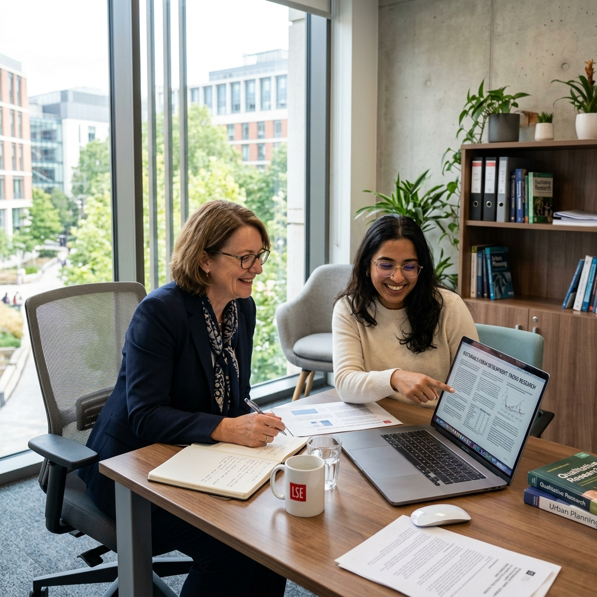

Asesoría Metodológica
Estructuración científica de tu matriz de consistencia, hipótesis, delimitación del problema y diseño muestral riguroso.
Te acompañamos paso a paso en la elaboración, desarrollo y defensa de tu tesis de grado, maestría o doctorado con rigor metodológico y herramientas avanzadas de IA.

"La guía metodológica e investigación con IA fueron fundamentales para aprobar mi tesis de grado sin observaciones. La atención fue ágil y muy profesional."
"Excelente acompañamiento en la estructuración de la matriz de consistencia y revisión APA 7ma edición. Logré graduarme a tiempo y con felicitación académica."
"Los simulacros de sustentación ante jurado me dieron la seguridad que necesitaba para defender mi proyecto con soltura. 100% recomendado."
Estructuración científica de tu matriz de consistencia, hipótesis, delimitación del problema y diseño muestral riguroso.
Aprovechamos herramientas modernas de Inteligencia Artificial para el filtrado sistemático de literatura y revisión bibliográfica.
Corrección de estilo profesional, citado riguroso (APA 7ma ed., Vancouver, ISO) y verificación de originalidad académica.
Entrenamiento intensivo y simulaciones de defensa oral ante jurado evaluador para garantizar tu aprobación con distinción.
Tesistas Guiados
Tasa de Aprobación
Años de Experiencia
Garantía de Calidad
Criterios clave, errores comunes y proceso paso a paso para no equivocarte desde el inicio.
Leer artículo →Estructura, fuentes académicas, normas APA 7ma edición y los errores más frecuentes.
Leer artículo →Herramientas de Inteligencia Artificial para investigar, redactar y corregir tu tesis éticamente.
Leer artículo →Una obra imprescindible diseñada para estudiantes e investigadores. Este libro desglosa de forma clara y directa las estrategias clave para formular el problema, estructurar la metodología, analizar datos y preparar una sustentación impecable ante el jurado.